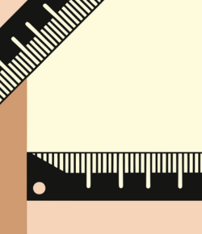

Principais Assuntos de Física
Bases da Física
- Introdução a Física
- Preparo para Estudar Física
- Introdução a vetores e escalares

O sistema métrico - unidades de medidas
- Sistema métrico: unidades de distância
- Sistema métrico: unidades de peso
- Sistema métrico: unidades de volume
Conversão de unidades
- Conversão de unidades métricas de distancia
- conversão de unidades métricas de peso
- conversão de unidades métricas de volume
Notação científica
- Como funciona a notação científica
- Exemplos de notação científica
- revisão dos estudos
Observações e mensurações
- Como são feitos e mensurados os experimentos
- Exemplos das observações e mensurações em experimentos
- revisão dos estudos